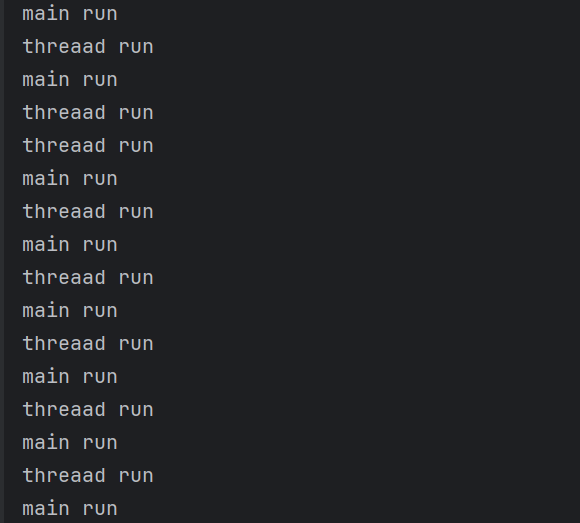
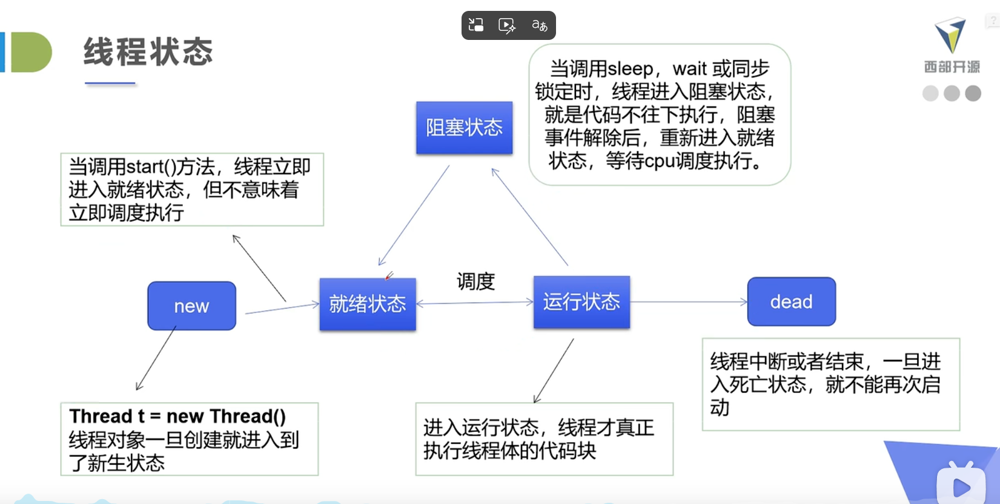

java多线程
创建方式
- 继承Thread类
- 实现Runnable接口
- 实现Callable接口
- 使用线程池
创建方式，继承Thread类
public class MyThread extends Thread {
@Override
public void run() {
System.out.println("Thread is running");
}
}
// 继承Thread类创建线程
public class threaad extends Thread {
public void run() {
for (int i = 0; i < 10; i++) {
System.out.println("threaad run");
try {
Thread.sleep(1000);
} catch (InterruptedException e) {
e.printStackTrace();
}
}
}
// 主方法启动线程
public static void main(String[] args) {
threaad t = new threaad();
// 启动线程
t.start();
for (int i = 0; i < 10; i++) {
System.out.println("main run");
try {
Thread.sleep(1000);
} catch (InterruptedException e) {
e.printStackTrace();
}
}
}
}
结果：

创建方式，实现Runnable接口
public class tt2 implements Runnable {
public void run() {
for (int i = 0; i < 10; i++) {
System.out.println("threaad run");
try {
Thread.sleep(1000);
} catch (InterruptedException e) {
e.printStackTrace();
}
}
}
// 主方法启动线程
public static void main(String[] args) {
tt2 t = new tt2();
// 启动线程
Thread thread = new Thread(t);
thread.start();
//或者直接这样写
// new Thread(new tt2()).start();
for (int i = 0; i < 10; i++) {
System.out.println("main run");
try {
Thread.sleep(1000);
} catch (InterruptedException e) {
e.printStackTrace();
}
}
}
}
和继承不同的是，实现Runnable接口需要将Runnable对象作为参数传递给Thread对象，然后调用Thread的start方法启动线程。
创建方式，实现Callable接口
import java.util.concurrent.Callable;
public class MyCallable implements Callable<String> {
@Override
public String call() throws Exception {
return "Callable is running";
}
}
创建方式，使用线程池
import java.util.concurrent.ExecutorService;
import java.util.concurrent.Executors;
public class ThreadPoolExample {
public static void main(String[] args) {
ExecutorService executor = Executors.newFixedThreadPool(5);
for (int i = 0; i < 10; i++) {
executor.submit(new MyRunnable());
}
executor.shutdown();
}
}
多线程下载器-下载FileUtils-使用maven引入commons-io
<dependency>
<groupId>commons-io</groupId>
<artifactId>commons-io</artifactId>
<version>2.11.0</version>
</dependency>
多线程下载器代码
package com.itheima;
import org.apache.commons.io.FileUtils;
import java.io.File;
import java.net.URL;
//多线程同步下载
public class TestThread2 extends Thread {
private String url = "";
private String fileName = "";
public TestThread2(String url,String fileName){
this.url=url;
this.fileName=fileName;
}
@Override
public void run() {
Downloader downloader=new Downloader();
downloader.downloadFile(url,fileName);
System.out.println("download-"+fileName+"-oak");
}
public static void main(String[] args) {
TestThread2 t1=new TestThread2("https://funbirdtravel.com/wp-content/uploads/2018/07/Alaska-Aurora.jpg","E:\\java\\java-test\\jvtp\\1.jpg");
TestThread2 t2=new TestThread2("https://funbirdtravel.com/wp-content/uploads/2018/07/Alaska-Aurora.jpg","E:\\java\\java-test\\jvtp\\2.jpg");
TestThread2 t3=new TestThread2("https://funbirdtravel.com/wp-content/uploads/2018/07/Alaska-Aurora.jpg","E:\\java\\java-test\\jvtp\\3.jpg");
t1.start();
t2.start();
t3.start();
}
}
class Downloader {
public void downloadFile(String url, String fileName) {
try {
FileUtils.copyURLToFile(new URL(url), new File(fileName));
} catch (Exception e) {
e.printStackTrace();
}
}
}
在多线程中，容易遇到并发问题，如购票
public class TestThread3 extends Thread {
private static int ticket = 10; // 共享资源，票数
@Override
public void run() {
while (true) {
if (ticket > 0) {
System.out.println(getName() + " 卖出一张票，剩余票数: " + (--ticket));
} else {
break;
}
}
}
public static void main(String[] args) {
TestThread3 t1 = new TestThread3();
TestThread3 t2 = new TestThread3();
TestThread3 t3 = new TestThread3();
t1.start();
t2.start();
t3.start();
}
}
用callable实现多线程，然后创建线程池子
package test; import org.apache.commons.io.FileUtils; import java.io.File; import java.net.URL; import java.util.Arrays; import java.util.concurrent.Callable; import java.util.concurrent.ExecutorService; import java.util.concurrent.Executors; public class callable implements Callable{ private String fileUrl; private String savePath; callable(String fileUrl, String savePath){ this.fileUrl = fileUrl; this.savePath = savePath; } @Override public String call () throws Exception { Downloader downloader = new Downloader(); downloader.downloadFile(fileUrl, savePath); System.out.println(savePath+"下载完成"); return savePath; } public static void main(String[] args) { callable c1= new callable("https://funbirdtravel.com/wp-content/uploads/2018/07/Alaska-Aurora.jpg","E:\\java\\java-test\\jvtp\\7.jpg"); callable c2=new callable("https://funbirdtravel.com/wp-content/uploads/2018/07/Alaska-Aurora.jpg","E:\\java\\java-test\\jvtp\\8.jpg"); callable c3=new callable("https://funbirdtravel.com/wp-content/uploads/2018/07/Alaska-Aurora.jpg","E:\\java\\java-test\\jvtp\\9.jpg"); try{ ExecutorService executorService= Executors.newFixedThreadPool(3); executorService.invokeAll(Arrays.asList(c1,c2,c3)); executorService.shutdown(); }catch(Exception e){ e.printStackTrace(); } } } class Downloader{ public void downloadFile(String fileUrl, String savePath) throws Exception{ try{ URL url = new URL(fileUrl); FileUtils.copyURLToFile(url, new File(savePath)); }catch(Exception e){ e.printStackTrace(); } } }
callable的好处
- 可以有返回值
- 可以抛出异常
- 可以与线程池结合使用
静态代理思想
// 模拟Thread的代理类（自定义静态代理）
class MyThreadProxy implements Runnable {
// 持有目标类（Runnable任务）
private Runnable target;
private String name;
public MyThreadProxy(Runnable target, String name) {
this.target = target;
this.name = name;
}
// 代理的“启动”方法（对应Thread.start()）
public void start() {
// 代理添加前置逻辑：模拟线程启动的额外操作
System.out.println("代理逻辑：创建线程[" + name + "]，申请系统资源");
// 模拟线程执行（实际是JVM调用，这里简化为直接调用）
this.run();
// 代理添加后置逻辑：模拟线程结束的额外操作
System.out.println("代理逻辑：线程[" + name + "]执行完毕，释放资源");
}
// 实现Runnable，调用目标类的run()
@Override
public void run() {
if (target != null) {
target.run(); // 调用目标类的核心业务
}
}
}
// 测试自定义模拟代理
public class CustomThreadProxyDemo {
public static void main(String[] args) {
// 目标任务
Runnable task = new MyTask();
// 自定义代理类
MyThreadProxy proxy = new MyThreadProxy(task, "自定义线程1");
// 调用代理的start()
proxy.start();
}
}
lambda表达式
- lambda发展
- 函数式接口
- 实现类
- 静态内部类
- 局部内部类
- 匿名内部类
- lambda表达式
// 1. 定义一个函数式接口
interface ILike {
void lambda(); // 仅一个抽象方法，符合函数式接口规范
}
// 2. 外部实现类
class Like implements ILike {
@Override
public void lambda() {
System.out.println("i like lambda");
}
}
public class TestLambda1 {
// 3. 静态内部类
static class Like2 implements ILike {
@Override
public void lambda() {
System.out.println("i like lambda2");
}
}
public static void main(String[] args) {
// 使用外部实现类
ILike like = new Like();
like.lambda();
// 使用静态内部类
like = new Like2();
like.lambda();
}
}
public static void main(String[] args) {
// ... 前面代码省略
// 4. 局部内部类（定义在main方法内部）
class Like3 implements ILike {
@Override
public void lambda() {
System.out.println("i like lambda3");
}
}
// 使用局部内部类
like = new Like3();
like.lambda();
}
public static void main(String[] args) {
// ... 前面代码省略
// 5. 匿名内部类（没有类名，直接实现接口）
like = new ILike() {
@Override
public void lambda() {
System.out.println("i like lambda4");
}
};
like.lambda();
}
public static void main(String[] args) {
// ... 前面代码省略
// 6. Lambda表达式（简化匿名内部类）
like = () -> {
System.out.println("i like lambda5");
};
like.lambda();
}
线程五大状态
- 新建状态（New）：线程对象被创建，但尚未启动。
- 就绪状态（Runnable）：线程已准备好运行，等待CPU调度。
- 运行状态（Running）：线程正在执行其任务。
- 阻塞状态（Blocked/Waiting）：线程因等待某个条件而暂停执行。
- 终止状态（Terminated）：线程已完成执行或被强制终止。

线程停止
- 使用标志位：通过设置一个共享变量来控制线程的运行状态。
class MyThread extends Thread { private volatile boolean running = true; public void run() { while (running) { // 线程执行的任务 } } } - 在新的实现类中自写一个停止方法，去改变标志位的值
class MyThread extends Thread { private volatile boolean running = true; public void run() { while (running) { // 线程执行的任务 } } public void stopThread() { running = false; } }
线程休眠
try {
Thread.sleep(1000); // 休眠1秒
} catch (InterruptedException e) {
e.printStackTrace();
}
3.线程礼让
Thread.yield(); // 暂停当前线程，礼让其他线程执行
👇
package test;
public class Main {
public static void main(String[] args) {
MyThread t1=new MyThread();
MyThread t2=new MyThread();
t1.start();
t2.start();
}
}
class MyThread extends Thread {
@Override
public void run() {
System.out.println("Thread "+Thread.currentThread().getName()+" - "+"start");
Thread.yield();
System.out.println("Thread "+Thread.currentThread().getName()+" - "+"yield");
}
}
线程强制执行join
package test;
public class Main {
class Test implements Runnable {
public void test() {
for (int i = 0; i < 1000; i++) {
System.out.println("join+" + i);
}
}
@Override
public void run() {
test();
}
}
public static void main(String[] args) {
Test test = new Main().new Test();
Thread thread = new Thread(test);
thread.start();
for (int i = 0; i < 100; i++) {
if (i == 50) {
try{
thread.join();}catch(InterruptedException e){
e.printStackTrace();
}
}
System.out.println("main+" + i);
}
}
}
查看线程状态
package test;
public class Main {
public static void main(String[] args) {
MyThread t1=new MyThread();
System.out.println("线程状态："+t1.getState());
t1.start();
System.out.println("线程状态："+t1.getState());
try{
Thread.sleep(100);
}catch(InterruptedException e){
e.printStackTrace();
}
System.out.println("线程状态："+t1.getState());
try{
t1.join();
}catch(InterruptedException e){
e.printStackTrace();
}
System.out.println("线程状态："+t1.getState());
}
}
class MyThread extends Thread {
@Override
public void run() {
try{
Thread.sleep(500);
}catch(InterruptedException e){
e.printStackTrace();
}
}
}
测试线程优先级
package test;
public class Main {
public static void main(String[] args) {
Thread t1=new Thread(new MyThread(),"t1");
Thread t2=new Thread(new MyThread(),"t2");
Thread t3=new Thread(new MyThread(),"t3");
Thread t4=new Thread(new MyThread(),"t4");
Thread t5=new Thread(new MyThread(),"t5");
Thread t6=new Thread(new MyThread(),"t6");
t1.setPriority(Thread.MIN_PRIORITY); // 1
t2.setPriority(Thread.NORM_PRIORITY); // 5
t3.setPriority(Thread.MAX_PRIORITY); // 10
t4.setPriority(3);
t5.setPriority(7);
t6.setPriority(9);
t1.start();
t2.start();
t3.start();
t4.start();
t5.start();
t6.start();
}
}
class MyThread implements Runnable {
@Override
public void run() {
for(int i=0;i<1;i++){
System.out.println("Thread "+Thread.currentThread().getName()+" - "+"Priority: "+Thread.currentThread().getPriority()+" - "+i);
}
}
}
守护线程
package Demo;
public class Daemon {
public static void main(String[] args) {
MyThread t1=new MyThread();
t1.setDaemon(true); // 设置为守护线程
t1.start();
for(int i=0;i<5;i++){
System.out.println("main thread - "+i);
try{
Thread.sleep(500);
}catch(InterruptedException e){
e.printStackTrace();
}
}
}
}
class MyThread extends Thread {
@Override
public void run() {
int i=0;
while(true){
System.out.println("Daemon Thread - "+i++);
try{
Thread.sleep(100);
}catch(InterruptedException e){
e.printStackTrace();
}
}
}
}
线程同步机制
- 同步方法
- 同步代码块
- 静态同步方法
- 静态同步代码块
同步方法
public synchronized void synchronizedMethod() {
// 同步方法的代码
}
同步代码块
关键字synchronized
public void method() {
synchronized(this) {
// 同步代码块的代码
}
}
静态同步方法
public static synchronized void staticSynchronizedMethod() {
// 静态同步方法的代码
}
静态同步代码块
public void method() {
synchronized(MyClass.class) {
// 静态同步代码块的代码
}
}
同步方法和代码块会导致线程阻塞，保证同一时刻只有一个线程执行同步代码，从而避免线程安全问题，但是会影响程序的并发性能。
CopyOnWriteArrayList
package test;
import java.util.concurrent.CopyOnWriteArrayList;
// 测试JUC安全类型的集合
public class Main {
public static void main(String[] args) {
CopyOnWriteArrayList list = new CopyOnWriteArrayList<>();
for (int i = 0; i < 10000; i++) {
new Thread(() -> {
list.add(Thread.currentThread().getName());
}).start();
System.out.println(Thread.currentThread().getName());
}
try {
Thread.sleep(3000);
} catch (InterruptedException e) {
e.printStackTrace();
}
System.out.println(list.size());
}
}
死锁
package test;
import java.awt.*; // 截图中存在该导入（实际本案例未用到）
// 死锁:多个线程互相抱着对方需要的资源,然后形成僵持.
public class Main {
public static void main(String[] args) {
Makeup g1 = new Makeup(0, "灰姑娘");
Makeup g2 = new Makeup(1, "白雪公主");
g1.start();
g2.start();
}
}
// 口红（作为共享资源）
class Lipstick {
}
// 镜子（作为共享资源）
class Mirror {
}
// 化妆线程（继承Thread）
class Makeup extends Thread {
// 需要的资源只有一份，用static来保证只有一份
static Lipstick lipstick = new Lipstick();
static Mirror mirror = new Mirror();
int choice; // 选择（决定资源获取顺序）
String girlName; // 使用化妆品的人
// 构造器：初始化选择和姓名
Makeup(int choice, String girlName) {
this.choice = choice;
this.girlName = girlName;
}
@Override
public void run() {
// 化妆（核心逻辑：争抢资源）
try {
makeup();
} catch (InterruptedException e) {
e.printStackTrace();
}
}
// 化妆方法：互相持有对方的锁，形成死锁
private void makeup() throws InterruptedException {
if (choice == 0) {
// 1. 先获口红的锁
synchronized (lipstick) {
System.out.println(this.girlName + "获得口红的锁");
Thread.sleep(1000); // 模拟持有资源后的操作时间
}
// 2. 尝试获镜子的锁（此时镜子已被另一个线程持有）
synchronized (mirror) {
System.out.println(this.girlName + "获得镜子的锁");
}
} else {
// 1. 先获镜子的锁
synchronized (mirror) {
System.out.println(this.girlName + "获得镜子的锁");
Thread.sleep(2000); // 模拟持有资源后的操作时间
}
// 2. 尝试获口红的锁（此时口红已被另一个线程持有）
synchronized (lipstick) {
System.out.println(this.girlName + "获得口红的锁");
}
}
}
}
lock
package test;
import java.util.concurrent.locks.Lock;
import java.util.concurrent.locks.ReentrantLock;
public class Main {
public static void main(String[] args) {
Ticket ticket = new Ticket();
Thread t1 = new Thread(() -> {
for (int i = 0; i < 40; i++) {
ticket.sell();
}
}, "窗口1");
Thread t2 = new Thread(() -> {
for (int i = 0; i < 40; i++) {
ticket.sell();
}
}, "窗口2");
Thread t3 = new Thread(() -> {
for (int i = 0; i < 40; i++) {
ticket.sell();
}
}, "窗口3");
t1.start();
t2.start();
t3.start();
}
}
class Ticket {
private int number = 30;
private final Lock lock = new ReentrantLock();
public void sell() {
lock.lock();
try {
if (number > 0) {
System.out.println(Thread.currentThread().getName() + " 卖出一张票，剩余票数: " + (--number));
}
} finally {
lock.unlock();
}
}
}
线程协作
生产者消费者问题
synchronize可也阻止并发更新同一个共享资源，但是无法用来传递消息
- wait()
- wait(long timeout)[sleep不释放锁，wait释放锁]
- notify()
- notifyAll()
管程法（缓冲区）
package test;
// 测试:生产者消费者模型-->利用缓冲区解决:管程法
// 生产者, 消费者, 产品, 缓冲区
public class Main {
public static void main(String[] args) {
SynContainer container = new SynContainer();
// 启动生产者线程
new Productor(container).start();
// 启动消费者线程
new Consumer(container).start();
}
}
// 生产者
class Productor extends Thread {
SynContainer container;
// 构造器:关联缓冲区
public Productor(SynContainer container) {
this.container = container;
}
// 生产逻辑
@Override
public void run() {
// 生产100个产品
for (int i = 0; i < 100; i++) {
container.push(new Chicken(i));
System.out.println("生产了-->" + i + "只鸡");
}
}
}
// 消费者
class Consumer extends Thread {
SynContainer container;
// 构造器:关联缓冲区
public Consumer(SynContainer container) {
this.container = container;
}
// 消费逻辑
@Override
public void run() {
// 消费100个产品
for (int i = 0; i < 100; i++) {
System.out.println("消费了-->" + container.pop().id + "只鸡");
}
}
}
// 产品(鸡)
class Chicken {
int id; // 产品编号
// 构造器:初始化产品编号
public Chicken(int id) {
this.id = id;
}
}
// 缓冲区(管程)
class SynContainer {
// 容器大小(最多存10个产品)
Chicken[] chickens = new Chicken[10];
// 容器计数器(当前产品数量)
int count = 0;
// 生产者放入产品 (同步方法,保证线程安全)
public synchronized void push(Chicken chicken) {
// 容器满了,等待消费者消费
if (count == chickens.length) {
try {
this.wait(); // 生产者等待
} catch (InterruptedException e) {
e.printStackTrace();
}
}
// 容器没满,放入产品
chickens[count] = chicken;
count++;
// 通知消费者可以消费了
this.notifyAll();
}
// 消费者取出产品 (同步方法,保证线程安全)
public synchronized Chicken pop() {
// 容器空了,等待生产者生产
if (count == 0) {
try {
this.wait(); // 消费者等待
} catch (InterruptedException e) {
e.printStackTrace();
}
}
// 容器有产品,取出产品
count--;
Chicken chicken = chickens[count];
// 通知生产者可以生产了
this.notifyAll();
return chicken;
}
}
====================
信号灯法
package test;
public class Test2 {
// 测试生产者消费者模型2：信号灯法（标志位解决）
public static void main(String[] args) {
TV tv = new TV();
// 启动演员（生产者）线程
new Player(tv).start();
// 启动观众（消费者）线程
new Watcher(tv).start();
}
}
// 生产者 → 演员
class Player extends Thread {
TV tv;
public Player(TV tv) {
this.tv = tv;
}
@Override
public void run() {
// 表演10个节目
for (int i = 0; i < 10; i++) {
this.tv.play("节目" + i);
}
}
}
// 消费者 → 观众
class Watcher extends Thread {
TV tv;
public Watcher(TV tv) {
this.tv = tv;
}
@Override
public void run() {
// 观看10个节目
for (int i = 0; i < 10; i++) {
this.tv.watch();
}
}
}
// 产品 → 节目（信号灯载体）
class TV {
String voice; // 表演的节目内容
// flag标志位：true=演员可表演（观众等待）；false=观众可观看（演员等待）
boolean flag = true;
// 表演（生产者操作）
public synchronized void play(String voice) {
// 若flag为false（当前是观众观看状态），演员等待
if (!flag) {
try {
this.wait();
} catch (InterruptedException e) {
e.printStackTrace();
}
}
// 演员表演节目
System.out.println("演员表演了：" + voice);
// 通知观众可以观看
this.notifyAll();
// 记录节目内容
this.voice = voice;
// 翻转标志位，切换为“观众可观看”状态
this.flag = !this.flag;
}
// 观看（消费者操作）
public synchronized void watch() {
// 若flag为true（当前是演员表演状态），观众等待
if (flag) {
try {
this.wait();
} catch (InterruptedException e) {
e.printStackTrace();
}
}
// 观众观看节目
System.out.println("观看了：" + this.voice);
// 通知演员可以继续表演
this.notifyAll();
// 翻转标志位，切换为“演员可表演”状态
this.flag = !this.flag;
}
}
线程池
package test;
import java.util.concurrent.ExecutorService;
import java.util.concurrent.Executors;
public class Main {
public static void main(String[] args) {
// 创建固定大小的线程池
ExecutorService executorService = Executors.newFixedThreadPool(3);
// 提交多个任务到线程池
for (int i = 0; i < 10; i++) {
final int taskId = i;
executorService.submit(() -> {
System.out.println("任务 " + taskId + " 正在执行，线程名：" + Thread.currentThread().getName());
try {
Thread.sleep(1000); // 模拟任务执行时间
} catch (InterruptedException e) {
e.printStackTrace();
}
System.out.println("任务 " + taskId + " 执行完毕，线程名：" + Thread.currentThread().getName());
});
}
// 关闭线程池
executorService.shutdown();
}
}